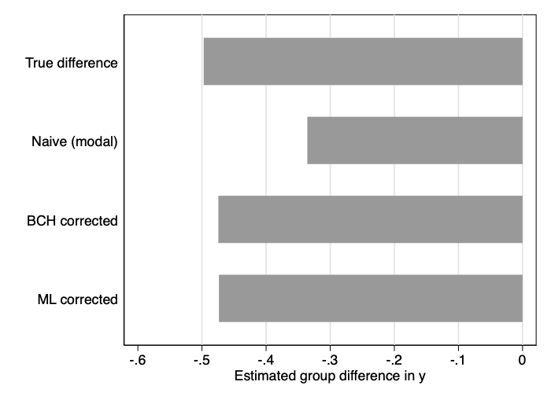
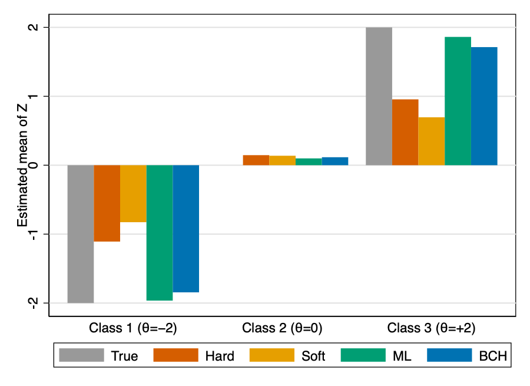

[1] The latent bias in latent class analysis
After you fit a latent class model, linking the classes to outcomes is trickier than it looks. The standard approach biases your estimates toward zero — sometimes by 40% — and there is nothing in the output to warn you. Here is what goes wrong and how the step3 command corrects it.
Latent class analysis is a method for discovering hidden subgroups of observations in your data. Latent means not directly observed: the classes are inferred from patterns in measured variables (such as survey responses, test items, behavioural indicators) rather than assigned by the researcher. Feed it enough items and it tells you that your sample breaks into — say — three distinct profiles, each with a characteristic response pattern.
Once you have those classes, the natural next question is: do they differ on some outcome I care about? Or: what predicts membership in each group? The standard approach to answering these questions introduces a systematic bias that shrinks your estimates. Sometimes by 40%. And there is nothing in the output to warn you.
Here is what goes wrong, why it matters, and how to fix it in Stata.
The three-step workflow
In Step 1, you estimate the latent class model using only the observed indicators — no external variables yet. The model returns posterior probabilities for every observation: one probability per class, summing to 1. If your model has two classes, person i might come out 85% likely to belong to Class 1 and 15% likely to belong to Class 2.
In Step 2, you assign each person to their modal class — the one with the highest posterior. Person i at 85% / 15% gets hard-assigned to Class 1. An alternative is proportional assignment, where each person contributes fractionally to every class weighted by their posteriors; as we will see, this is biased too. In Step 3, you run a regression, ANOVA, or multinomial logit using these class labels as a variable.
The problem is between Steps 2 and 3, wherein we treat the latent class variable as it was observed.
Fig. 1 — Classification error enters between Steps 2 and 3, when uncertain membership is treated as certain.
The bias: class differences get diluted
When you assign someone to a class, you treat an uncertain membership as though it were known with certainty. People who truly belong to Class 1 get counted in Class 2, and vice versa. The groups look more similar than they actually are — and the estimated difference between them shrinks.
Simulation studies show naive three-step estimates are typically 20–45% smaller than the truth — largest when classes overlap, smallest when they are cleanly separated.1
The mechanism is easy to see. Suppose two equal-sized classes have true outcome means of 1 and 0, and 20% of observations land in the wrong class. The "Class 1" bucket now contains 80 genuine members (mean 1) and 20 interlopers from Class 2 (mean 0), giving a bucket average of 0.80. By symmetry the "Class 2" bucket averages 0.20, and the naive estimate of the group difference is 0.60 rather than the true 1.00.
More generally, with a misclassification rate of ε (say, 20%), the naive estimator recovers only (1 − 2ε) of the true effect. At 10% error you keep 80% of the signal; at 30% error you keep only 40%. Models with moderate class overlap routinely sit between ε = 0.15 and ε = 0.30 — well within the range where the bias is practically meaningful.
A concrete example with real data. We model the height distribution of 4,071 high-school students as a two-class mixture, then ask whether those groups differ on a second outcome, y. The true difference is −0.50. After modal assignment, 82% of students land in the correct group — seemingly good. But the naive Step 3 estimate is only −0.34: a 33% underestimate, entirely due to the 18% who were misclassified.

Fig. 2 — The naive approach recovers only two-thirds of the true effect; both bias-corrected methods closely match the truth.
The classification error matrix
Think of D as a receipt that summarises how much Step 2 distorted things. The entry in row s, column t is the probability of being assigned to class t when your true class is s. Diagonal entries capture correct classification; off-diagonal entries capture misclassification.
Formally, D is an S × S matrix — for two classes, a 2 × 2 table. When classes are well separated, the diagonals approach 1 and the off-diagonals approach 0. When classes overlap, the off-diagonals grow, and so does the bias. The key point: you do not need to guess D. It can be computed directly from the posterior probabilities saved in Step 1, by averaging across observations within each true-class group.
Fig. 3 — Matrix D for two hypothetical models. Shaded cells are correct classifications (diagonal); heavy borders on the right highlight off-diagonal errors that amplify bias in Step 3.
Both bias-corrected methods use D, but in different ways.
The fix: two bias-corrected methods
BCH (Bolck–Croon–Hagenaars). BCH takes the inverse of D and uses it as a set of correction weights. The dataset is expanded into one row per class per observation, each row weighted by an entry of D⁻¹. A standard weighted regression on this expanded dataset recovers unbiased estimates without ever touching the mixture model again — class definitions from Step 1 stay frozen.
ML (maximum likelihood). ML re-estimates the mixture model in Step 3, but holds the entries of D fixed as constraints. This lets the model account for classification error while estimating the relationship with the external variable, and it reports class-specific variances that BCH does not provide. The trade-off: it assumes normality within classes, which BCH does not require.2
Use BCH when normality within classes is uncertain, or when you want class definitions to stay fixed between steps. Use ML for categorical outcomes or when classes are well separated and distributional assumptions are plausible.
Using step3 in Stata
The step3 module implements both methods. The only prerequisite is that you have already estimated a mixture model — using Stata's fmm (finite mixture model) command or gsem — and saved the posterior probabilities with a common prefix, numbered sequentially from 1. That is the default format that Stata's predict, classposteriorpr produces.
Basic syntax
step3 varlist [if] [in], pr(stub) lclass(newvar) ///
[bch outcome id(varname) eqvar base(#) rrr level(#) detail]The pr() option supplies the prefix of your posterior probability variables. The lclass() option names a new variable that will store the modal class assignment. The id() option provides a unique person identifier — needed because step3 internally expands the dataset to one row per class per person and uses id() to reassemble results.
Distal outcome — BCH. A distal outcome is a variable that class membership influences — something downstream of the classes, not a cause of them. Think of it as a consequence you want to compare across groups. After fitting a two-class Gaussian mixture model on height and saving posterior probabilities:
. fmm 2, nolog: regress height
. predict cpost*, classposteriorpr
. step3 y, pr(cpost) lclass(w) id(pid) outcome bchThe outcome option tells step3 that y is influenced by class membership; bch selects the BCH estimator.
. step3 y, pr(cpost) lclass(w) id(pid) outcome bch
STEP3: Distal outcome analysis Number of obs = 4,071
BCH Mean estimation
--------------------------------------------------------------
| Coef. Std. Err. [95% Conf. Interval]
-------------+------------------------------------------------
y |
w |
1 | .4678218 .026197 .4164765 .519167
2 | -.0066626 .028869 -.0632448 .0499196
--------------------------------------------------------------
Note: Linearized std. err.These means — 0.47 and −0.01 — closely match the true population values (0.50 and 0.00). The naive estimate had produced a diluted difference of −0.34 instead of the true −0.50.
Distal outcome — ML. Drop the bch option to switch estimators. Adding detail prints a diagnostic table showing whether any observations changed class during re-estimation.
. step3 y, pr(cpost) lclass(w) outcome detail
Performing ML estimation...
STEP3: Distal outcome analysis Number of obs = 4,071
ML Mean estimation
--------------------------------------------------------------
| Coef. Std. Err. [95% Conf. Interval]
-------------+------------------------------------------------
y |
w |
1 | .4674262 .026677 .4151401 .5197122
2 | -.0061706 .0293066 -.0636105 .0512693
--------------------------------------------------------------
Note: Robust std. err.
Class composition (%) before and after Step 3
---------------------------------------------------
Class | Step 1 Step 3 | Change
-------------+------------------------+------------
1 | 55.35 55.35 | -0.00
2 | 44.65 44.65 | 0.00
---------------------------------------------------
Observations in Step 1 class moved to a different class in Step 3
+------------------------+
| n % |
|------------------------|
| 1 0 |
+------------------------+
Note: results might be inconsistent for % > 20The ML output also reports within-class variance estimates (sigma2). Add eqvar to constrain them equal across classes.
Covariate analysis. When you flip the causal direction — y predicts class membership rather than being predicted by it — drop the outcome option. The underlying model becomes a multinomial logit with the class indicator as the dependent variable.
. step3 y, pr(cpost) lclass(w) rrr
Performing ML estimation...
STEP3: Covariate analysis Number of obs = 4,071
ML Multinomial logistic regression
------------------------------------------------------------------------------
| RRR Std. Err. z P>|z| [95% Conf. Interval]
-------------+----------------------------------------------------------------
1.w | (base outcome)
-------------+----------------------------------------------------------------
2.w |
y | .6170943 .031358 -9.50 0.000 .5585953 .6817196
_cons | .9055532 .0439022 -2.05 0.041 .8234681 .9958206
------------------------------------------------------------------------------
Note: Robust std. err.Postestimation commands — pwcompare, margins, estimates store — all work as expected after any step3 call.
Simulation evidence
The bias isn't theoretical. Naive modal assignment loses between 45% and 65% of the true effect in simulations.
A Monte Carlo study with nearly 5,000 replications tests performance across three latent classes with true outcome means of −2, 0, and +2. Each class is defined by six binary indicators — observed yes/no items, analogous to survey responses — with moderate overlap between class profiles. Four estimators are compared: hard (modal) assignment; soft (proportional) assignment, where each person contributes fractionally to every class weighted by their posteriors; and the two bias-corrected methods.

Fig. 4 — Monte Carlo means across 4,986 replications. Both naive approaches substantially compress the class differences; BCH and ML recover the true separation closely.
For the extreme classes (true means ±2), hard assignment recovers only about ±1.1 and soft assignment only ±0.7. The BCH and ML estimates land near ±1.85 to ±1.96 — recovering over 90% of the true separation.3
Choosing between methods
Three questions guide the choice:
- Is your outcome continuous or categorical? BCH handles both; ML is generally better for categorical outcomes and covariates.
- Are your classes well separated? If entropy is high, ML is more efficient.
- Is normality within classes plausible? If not, BCH is the safer option.
| Situation | Method |
|---|---|
| Continuous distal outcome, normality uncertain | BCH No distributional assumptions |
| Continuous distal outcome, classes well separated | ML More efficient; reports within-class variances |
| Categorical outcome or covariate | ML BCH can produce negative weights with sparse cells |
| Low entropy, need stable class definitions | BCH Class composition does not shift in Step 3 |
| Naive modal or proportional assignment | Avoid Systematic downward bias, no correction |
If you are linking latent classes to external variables, the naive three-step approach is almost certainly giving you shrunken estimates. Run step3 instead.
- Entropy is a summary of classification quality. High entropy means most posterior probabilities cluster near 0 or 1; low entropy means they spread across classes. The 20–45% bias range assumes moderate entropy — when entropy approaches 1 the bias is negligible. ↩
- The ML estimator assumes a normal distribution within each class for continuous outcomes. When this assumption fails — skewed or heavy-tailed outcomes, for example — BCH is the safer choice. ↩
- BCH can amplify variance when class separation is poor, because inverting D magnifies the off-diagonal entries. In extreme cases (near-singular D), the weights can also turn negative, producing numerically unstable estimates. If you observe implausible estimates or convergence warnings, switch to ML. ↩